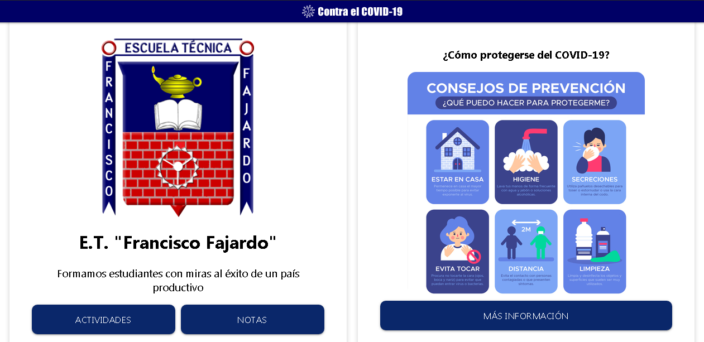
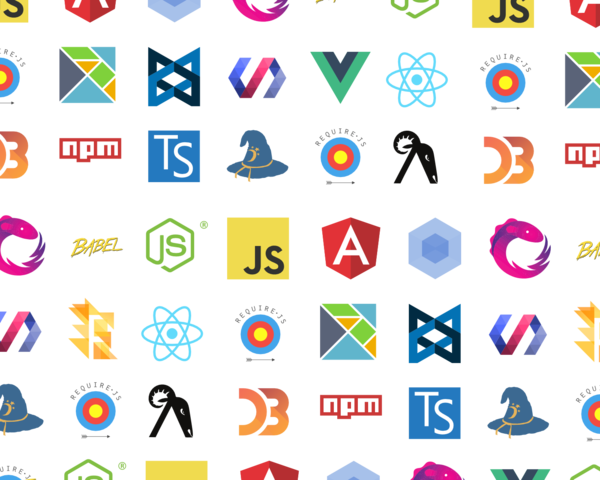

Página 4 / 6
www.franciscofajardo.com
Cualquier persona, gobierno, entidad u empresa debe de tener un sitio al que puedas ir y ver que información tiene, algo atractivo, algo que se vea bien, se sienta bien, y puedas encontrar lo que buscas muy facilmente. Cuando entras a un sitio de noticias, y te vas al inicio, te aparecen muchas noticias, también mucho contenido, pero es muy fácil navegar en ello, ¿no?, además se ve bastante bien a pesar de tener bastante contenido. Eso es lo que busca una página de inicio, y es lo que estaba pensando para la E.T. "Francisco Fajardo".
Con dos sistemas ya en producción y los que vienen necesitas una navegación para desplazarte sobre estos sistemas, necesitas una página de inicio. Y es por esto que me puse manos a la obra a crear lo que ustedes pueden visualizar en www.franciscofajardo.com, y lo que visualizaran en la siguiente imagen.

El logo de la E.T. "Francisco Fajardo", un eslogan, los enlaces a los respectivos sistemas de actividades y notas, y una imagen sobre el COVID-19. Además de un enlace al sitio oficial de la ONU sobre más información sobre esta enfermedad. Y con eso, el famoso "Contra el COVID-19" que aparece aquí y en los otros sistemas. Muy simple, agradable a la vista, y puedes encontrar lo que buscas fácilmente. Pero, ¿cómo la cree?
Para empezar, hay que hablar sobre el frontend actualmente, sobre lo que es hoy en día desarrollar un simple sitio web con tecnologías frontend. Y para hablar de eso primero debemos saber como funcionaba antes el frontend, todo paso de un simple archivo HTML con un archivo de CSS. A tener que aprender muchos conceptos, tener instalado Node.js, saber que es una REST API, saber manejar AJAX, saber conceptos de seguridad, saber manejar UI y UX correctamente, frameworks como React.js, Vue.js, Angular.js, frameworks que salen cada nuevo día, un tooling inmenso que a veces no sabes ni por donde empezar a hacer un simple Hello World con HTML por que tienes que instalarte Webpack para transpilarlo a código viejo, minificarlo y mandarlo a producción con esta herramienta, además de ello Autoprefixer para agregar los prefijos de los navegadores con Browserlist para evitar problemas de que no se ve correctamente en algún navegador, además de ello minificadores de imágenes, CSS, JavaScript, SVGs, etc. Todas estas herramientas, son el día a día ahora en el desarrollo frontend, y aunque es algo caótico, cuando lo entiendes, y sabes que debes de usar solo las herramientas que requieran y se adapten a tu proyecto son las que debes de usar, entonces con esto se vuelve algo menos caótico.

Ahora que ya entendiste que el frontend ya no es lo que es era antes y ha evolucionado mucho, ¿cómo como construí yo el sitio?, pues, sin mentirte, lo hice solo con HTML y CSS, no tiene nada de JavaScript. Alguna de las herramientas que usé las comente anteriormente, pero usé Babel, Webpack, Autoprefixer, Prettier. Ahora bien, ¿cómo empece?
Para empezar cualquier proyecto tienes que hacerlo con el clásico comando:

Luego instalar las dependencias de las tecnologías mencionadas anteriormente, y empezar a desarrollar el proyecto. El sitio usa Flexbox, una manera moderna de diseñar hoy en día. Y aunque el diseño podría haber sido mejor, para los requerimientos de la E.T. "Francisco Fajardo" estaban más que bien por que es un diseño simple. Sin embargo, no quiere decir que no se mejorara a futuro, pienso hacerlo.
Aprendí muchos conceptos al desarrollar este proyecto, conocía CSS Grid pero no lo sabía usar muy bien pero implemente los botones de "Actividades" y "Notas" además de los botones de contacto en el footer con CSS Grid. Y aunque no este utilizando ninguna media query para adaptarse a los tamaños de pantalla este diseño se adapta fácilmente a cualquier dispositivo gracias a Flexbox.
El código es bastante simple y lo puedes ir a visitar en GitHub en el enlace que esta más abajo, es totalmente Código Abierto y Software Libre como los otros proyectos. Sin embargo este esta con la licencia de Apache en vez de con la de MIT como los otros proyectos.